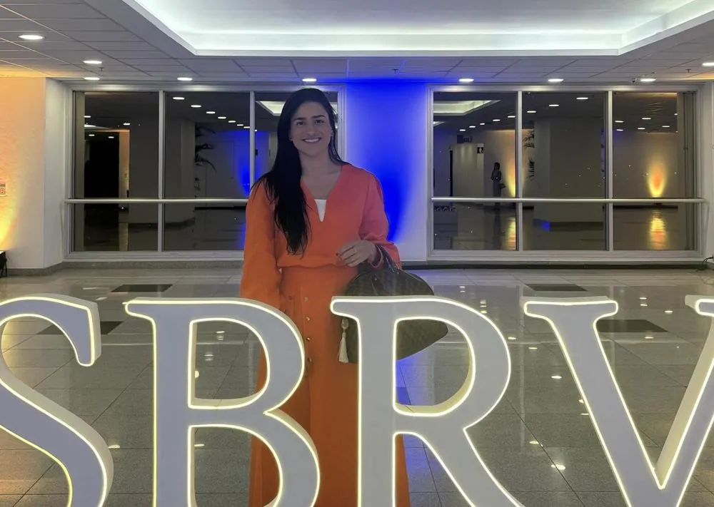
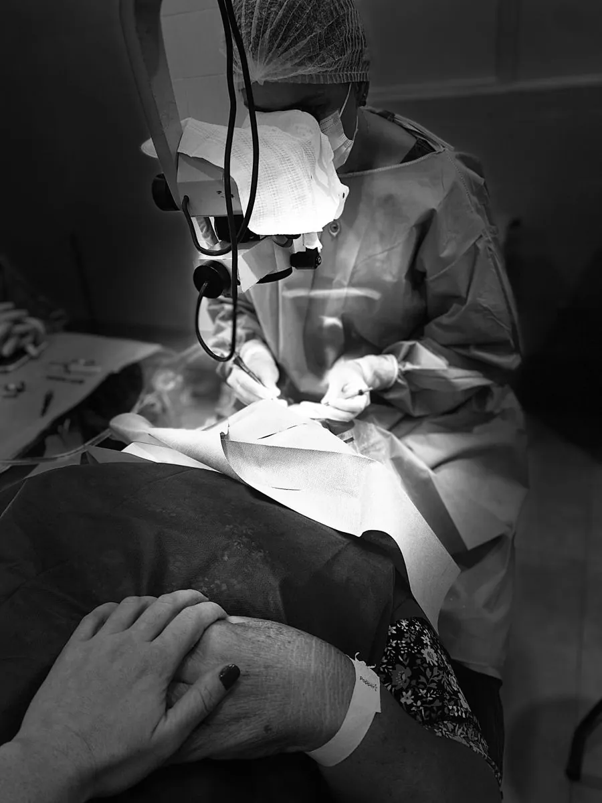
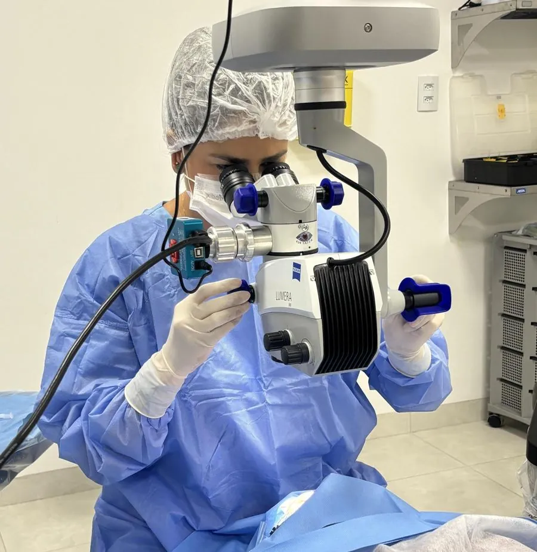
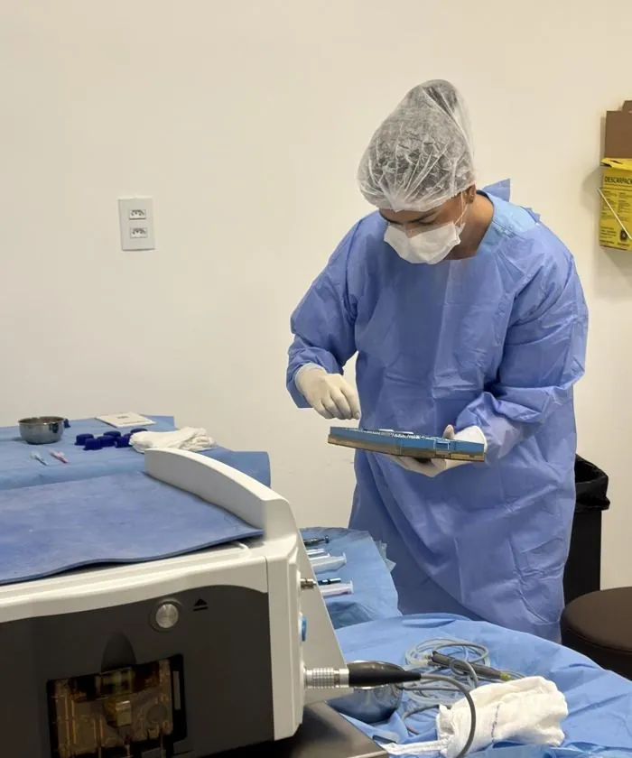
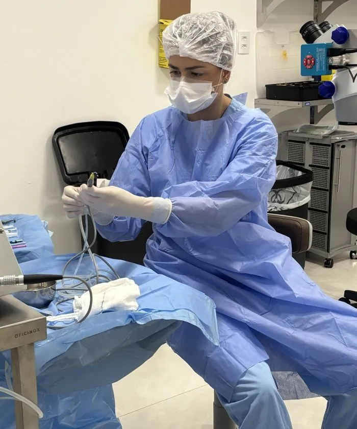
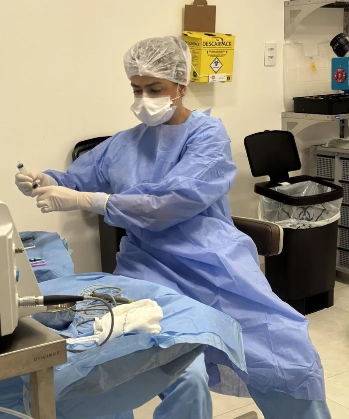

Cuidado com a catarata e a retina, perto de você.
Consultas, exames e cirurgia de catarata com a Dra. Renata Bertazzi em Palmas, Paraíso do Tocantins e Porto Nacional.
Dra. Renata Cerneiro Bertazzi · CRM-TO 7132 · RQE 3562 (Oftalmologia)
de Retina e Vítreo

Uma consulta sem pressa, com explicação clara em cada etapa.
A Dra. Renata Cerneiro Bertazzi é médica oftalmologista com atuação dedicada à catarata e às doenças da retina. Já realizou mais de 500 cirurgias e atende pacientes de Palmas e da região central do Tocantins.
Na consulta, ela examina o olho por completo, mostra o que encontrou e explica as opções de tratamento para que você decida com segurança.
- Cirurgia de catarata por facoemulsificação, com implante de lente intraocular
- Avaliação da retina em pacientes com diabetes, pressão alta e miopia alta
- Acompanhamento antes e depois da cirurgia com a mesma médica
A Dra. Renata passou pela prova de admissão da SBRV, a sociedade que reúne os oftalmologistas dedicados à retina no país. Estima-se que apenas 5% dos oftalmologistas do país sejam membros da sociedade.

Você fica acordado. E não fica sozinho.
A cirurgia de catarata costuma ser feita com anestesia em colírio, com o paciente acordado e tranquilo. A equipe acompanha cada momento, explica o que está acontecendo e garante que você se sinta seguro do começo ao fim.
Quando a lente natural do olho fica opaca
Dentro do olho existe uma lente transparente, o cristalino. Com o passar dos anos ele vai ficando opaco, como um vidro embaçado. Isso é a catarata. Ela é a principal causa de cegueira reversível no mundo, e o tratamento é cirúrgico.
O que a pessoa costuma notar
Visão embaçada ou "nublada", cores mais apagadas, dificuldade para dirigir à noite, ofuscamento com faróis e troca frequente do grau dos óculos.
Não é só a idade
É mais frequente depois dos 60 anos, mas também aparece mais cedo em quem tem diabetes, usa corticoide por longo tempo, teve trauma no olho ou se expõe muito ao sol sem proteção.
Não precisa "amadurecer"
A indicação é feita quando a catarata passa a atrapalhar a rotina: ler, dirigir, trabalhar. Esperar demais pode tornar a cirurgia mais difícil.
Como funciona a cirurgia
A técnica é a facoemulsificação. Por uma abertura de cerca de 2 milímetros, o cristalino opaco é fragmentado e aspirado, e no lugar dele é colocada uma lente intraocular. Na maioria dos casos a anestesia é com colírio e o paciente volta para casa no mesmo dia.

- ConsultaExame completo e conversa sobre o que você espera enxergar.
- ExamesBiometria e outras medidas que definem o grau da lente.
- Escolha da lenteDecidida junto com você, conforme sua rotina e seus olhos.
- CirurgiaProcedimento rápido, em geral de 15 a 30 minutos por olho.
- Pós-operatórioColírios e retornos marcados para acompanhar a recuperação.
Tipos de lente intraocular
A lente fica no olho para sempre. Cada tipo tem vantagens diferentes, e a indicação depende do exame.
| Lente | Para que serve | Óculos depois |
|---|---|---|
| Monofocal | Foca bem em uma distância, normalmente para longe. | Em geral, óculos para perto. |
| Tórica | Corrige também o astigmatismo. | Depende da distância escolhida. |
| Foco estendido (EDOF) | Amplia a faixa de visão de longe até a intermediária, como o computador. | Pode precisar para leitura miúda. |
| Multifocal | Foca em longe, intermediário e perto. | Menor dependência de óculos. |
A parte do olho que transforma luz em imagem
A retina é uma camada fina no fundo do olho, ligada ao cérebro pelo nervo óptico. Muitas doenças da retina não doem e não dão sinais no começo. Por isso o exame de fundo de olho (mapeamento de retina) é tão importante.
Retinopatia diabética
O excesso de açúcar no sangue danifica os pequenos vasos da retina. Quem tem diabetes deve fazer o exame de fundo de olho pelo menos uma vez por ano, mesmo enxergando bem.
Degeneração macular (DMRI)
Afeta a mácula, centro da visão. Linhas retas parecem tortas e surge uma mancha no meio do que se olha. Diagnóstico cedo ajuda a preservar a visão.
Descolamento de retina
A retina se solta da parede do olho. É mais comum em quem tem miopia alta, já operou o olho ou sofreu trauma. Precisa de atendimento rápido.
Procure atendimento no mesmo dia se notar:
Clarões de luz que aparecem de repente, muitos pontos ou "moscas" novas flutuando na visão, ou uma sombra que parece uma cortina cobrindo parte do que você vê.
Exames da retina
Mapeamento de retina
Exame do fundo do olho com a pupila dilatada. Indicado na rotina e antes de qualquer cirurgia.
OCT (tomografia de coerência óptica)
Imagem em camadas da retina, sem contato com o olho. Mostra alterações da mácula em detalhe.
Retinografia
Fotografia do fundo do olho para registrar e comparar a evolução ao longo do tempo.
Antes de cada cirurgia
Cada procedimento começa bem antes de o paciente entrar na sala: material conferido, equipamentos testados e tudo preparado com cuidado.



O que os pacientes mais perguntam
A cirurgia de catarata dói?
Na maioria dos casos a anestesia é feita com colírio, às vezes associada a um sedativo leve. O paciente fica acordado e pode sentir apenas uma pressão leve no olho.
Quanto tempo leva para voltar às atividades?
Muitos pacientes já percebem melhora nos primeiros dias. Atividades leves voltam logo, mas é preciso evitar esforço físico, coçar o olho e piscina por algumas semanas, conforme a orientação da médica.
Opera os dois olhos no mesmo dia?
Em geral, não. Cada olho é operado em uma data diferente, com intervalo de alguns dias ou semanas, para acompanhar a recuperação do primeiro.
A catarata pode voltar?
A catarata não volta, porque o cristalino foi retirado. Com o tempo, a membrana que segura a lente pode ficar opaca. Isso se chama opacificação da cápsula posterior e é tratado com um laser rápido no consultório (YAG laser).
Tenho diabetes e enxergo bem. Preciso examinar a retina?
Sim. A retinopatia diabética pode avançar sem sintomas. O exame anual de fundo de olho é a forma de encontrar alterações a tempo de tratar.
Como faço para agendar?
Envie uma mensagem pelo Instagram @dra.renatabertazzi informando a cidade em que prefere ser atendido (Palmas, Paraíso do Tocantins ou Porto Nacional).
Três cidades na região central do Tocantins
ACSU SO 50, Av. LO 13, Conj. 02, Lote 01 (antiga 501 Sul), ao lado do Hospital Cristo Rei · Palmas (TO) · CEP 77016-010
Quadra 104 Norte, Rua NE 5, nº 11 · Palmas (TO) · CEP 77006-020
Quadra 702 Sul, Av. Joaquim Teotônio Segurado, 15, Conj. 01, Sala 02 · Plano Diretor Sul · Palmas (TO)
Agende pelo Instagram informando a cidade.
Agende pelo Instagram informando a cidade.
Agende sua avaliação
Mande uma mensagem pelo Instagram e diga a cidade de sua preferência. No perfil você também encontra conteúdos sobre saúde dos olhos.